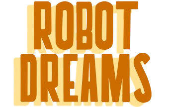

2023 | 1H 43M | 애니메이션, 음악 | 스페인, 프랑스
뉴욕 맨해튼에서 홀로 외롭게 살던 ‘도그’는 TV를 보다 홀린 듯 반려
로봇을 주문하고 그와 둘도 없는 단짝이 되어 행복한 나날을 보낸다.
그러던 어느 날, 해수욕장에 놀러 간 ‘도그’와 ‘로봇’은 예기치 못한
상황에 휩쓸려 이별을 맞이하게 되는데···
“기다려, 내가 꼭 다시 데리러 올게!”
출연/제작 | 파블로 베르헤르
이 작품은 영화 처음부터 끝까지 단 하나의 대사도 없습니다.: 도그와 로봇이 함께하던 시절 도그가 가장 좋아했던 노래.
대사 하나 없는 영화에서 september을 통해 모든 감정을 설명함.
엔딩에 다시금 노래가 들려올 땐 그저 하염없이 눈물을 흘릴 수 밖에...
좋아하는 코멘트
너여만 하는 것에서 너만 행복해진다면으로 떠나는 여정
- 왓챠피디아 'simple이스'사랑은 사랑하는 방법을 배우는 일이다. 아프지 않게 손을 잡는 법을, 물에 젖지 않게
- 네이버 블로그 '봉' 전문미리 붙잡는 법을, 무언가를 처음으로 배우는 방법은 딱 하나, 시행착오뿐이다. 최초의 사랑,
최초의 번역, 최초의 배움에는 오직 그 방법뿐이다. 에러가 없이는 배울 수 없는 탓에, 그것을
처음 가르쳐준 이와는 자꾸 어긋난다. 그래도 방법을 알고 있다는 사실만은 남아서, 그 시절의 사랑이
여전히 거기에 있다는 최후의 증거가 되어줄 것이다. 배움의 비가역성 덕분에 사랑도 비가역적이다.
배우는 사랑은 영혼을 영원히 바꿔놓기 때문에 영원해진다.